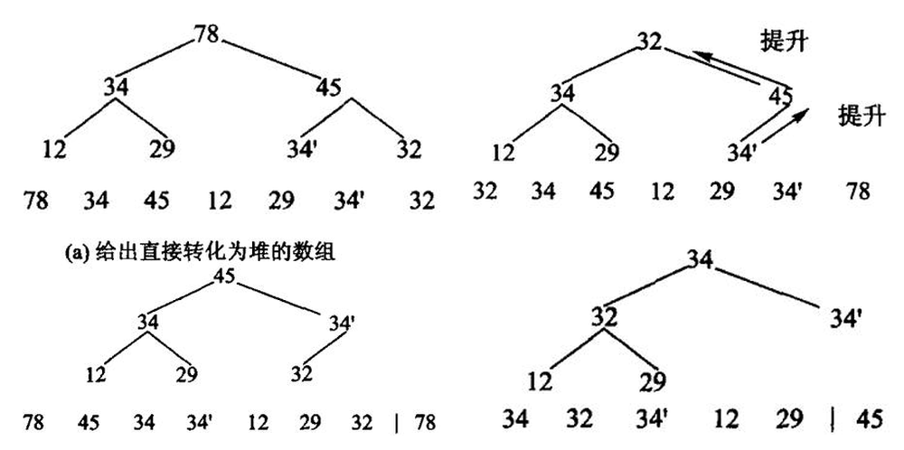
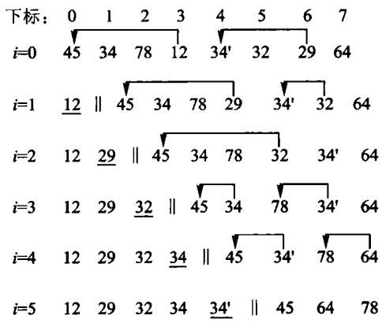
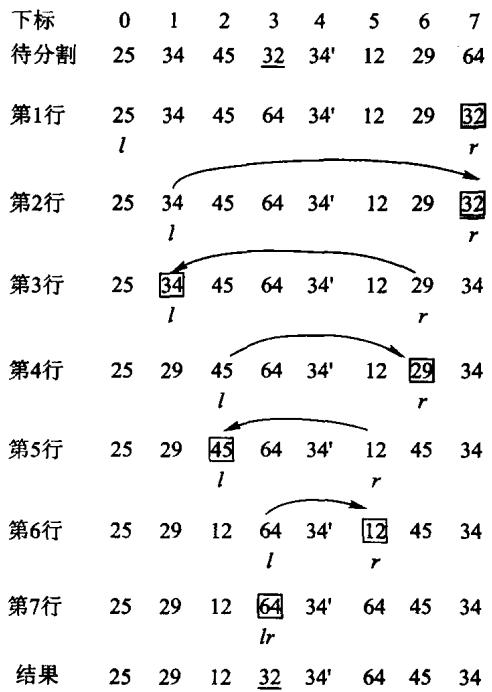
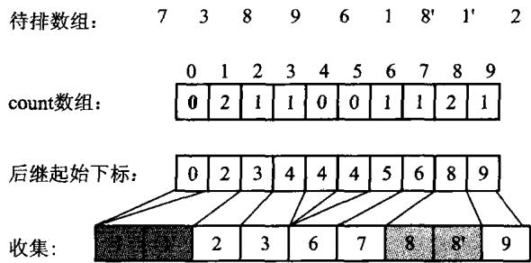
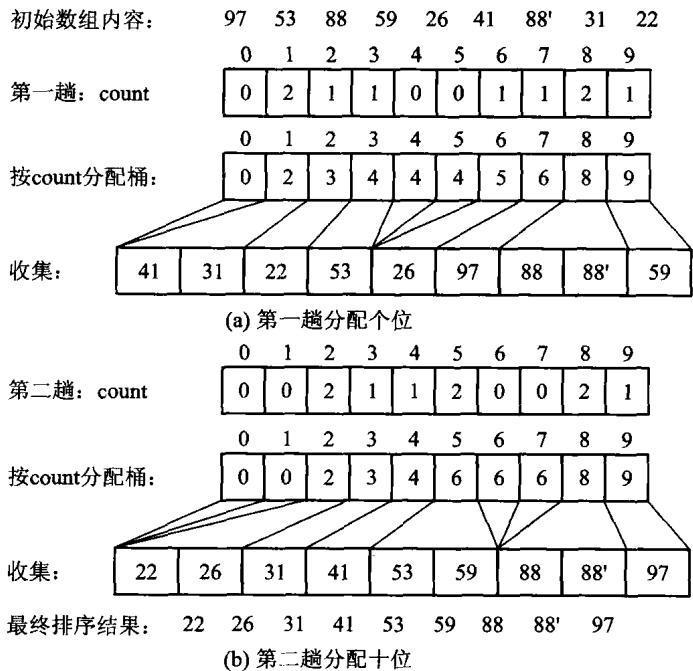
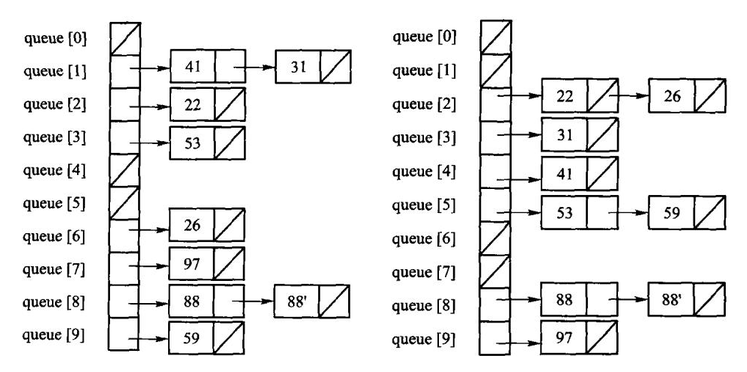
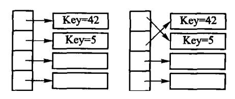

排序把一个序列重排为非递减顺序。阅读时同时问四个问题：比较还是分配？是否稳定？额外空间多少？最好、平均、最坏时间是多少？
#8.1 排序问题的基本概念
排序把一个序列重排，使关键码按非递减（或非递增）次序排列。内部排序假定数据能全部放进内存；数据必须在外存上多趟进出的，是第 9 章的外排序。
读每一种方法时同时问四件事：它靠元素之间比较，还是靠关键码的数字结构做分配？相等的键排完之后相对次序变不变（稳定）？除了原序列还要多少额外空间？最好、平均、最坏各是什么时间？「稳定」不是装饰：按成绩排序时，两名同分学生若仍按原来的姓名顺序出现，后续按姓名再排才有意义。
比较排序在最坏情况下至少需要 Ω(n log n) 次比较，这是判定树给出的下界。插入、选择、冒泡是 O(n2)；堆和归并最坏也是 O(n log n)；快排平均 O(n log n)，已经有序时退化成 O(n2)。计数和基数不是比较排序，代价取决于值域或位数。
| 方法 | 平均时间 | 稳定性 | 主要特点 |
|---|---|---|---|
| 直接插入 | O(n²) | 稳定 | 小规模、近乎有序时简单有效 |
| 冒泡 | O(n²) | 稳定 | 教学直观，通常不作为通用选择 |
| 选择 | O(n²) | 不稳定 | 交换次数少 |
| 堆排序 | O(n log n) | 不稳定 | 最坏情况也有保证，原地排序 |
| 快速排序 | O(n log n) 平均 | 不稳定 | 实务常用，坏划分时会退化 |
| 归并排序 | O(n log n) | 稳定 | 需要 O(n) 辅助空间 |
| 计数/基数 | 与值域或位数有关 | 可稳定 | 适合整数键，不是比较排序 |
本章所有实现都接受有符号整数，测试含重复值和负数；没有用 std::sort / std::make_heap 顶替任何一个手写算法——那样等于把这一章删掉。
#8.2 插入排序
先把四种排序跑一遍，看看它们交出什么。
#8.2.1 直接插入排序

#include "modern.hpp"
#include <iostream>
#include <vector>
namespace {
void print(const char* name, const std::vector<int>& values) {
std::cout << name;
for (int value : values) {
std::cout << ' ' << value;
}
std::cout << '\n';
}
} // namespace
int main() {
const std::vector<int> raw{3, -2, 7, 3, 0, -2, 9, 1};
auto insertion = raw;
dsa::sorting::insertion_sort(insertion);
print("插入:", insertion);
auto heap = raw;
dsa::sorting::heap_sort(heap);
print("堆排:", heap);
auto quick = raw;
dsa::sorting::quick_sort(quick);
print("快排:", quick);
auto radix = raw;
dsa::sorting::radix_sort(radix);
print("基数:", radix);
}c++ -std=c++17 -Wall -Wextra -Werror -Icode/ch08/sorting \
code/ch08/sorting/demo.cpp -o /tmp/sort-demo
/tmp/sort-demo插入: -2 -2 0 1 3 3 7 9
堆排: -2 -2 0 1 3 3 7 9
快排: -2 -2 0 1 3 3 7 9
基数: -2 -2 0 1 3 3 7 9四种算法交出同一条非递减序列。插入排序保持两个 -2、两个 3 的相对次序；堆排和快排不保证这一点。
直接插入把 values[index] 抽出来，向前挪动所有比它大的元素，把空位留给它。相等元素不越过彼此，所以稳定。
// 算法8.1：直接插入排序。相等元素不越过彼此，故稳定。
inline void insertion_sort(std::vector<int>& values) {
for (std::size_t index = 1; index < values.size(); ++index) {
const int value = values[index];
std::size_t hole = index;
while (hole != 0 && value < values[hole - 1]) {
values[hole] = values[hole - 1];
--hole;
}
values[hole] = value;
}
}本书讲算法的章节同时给一份 Python 实现，讲存储管理的章节只有 C++（D-025）。 两份不是逐行翻译：策略是同一份，代价不是同一份——差在哪里，每处都会点名。
# 算法8.1：直接插入排序。相等元素不越过彼此，故稳定。
def insertion_sort(values: list[int]) -> None:
for index in range(1, len(values)):
value = values[index]
hole = index
# `hole > 0` 这个条件在 Python 里是**承重的**，不是防御性写法：
# C++ 版越界会被 ASan 当场抓住，Python 的 values[-1] 却合法——
# 它悄悄环绕到最后一个元素，把排序结果搅乱而不报任何错。
while hole > 0 and value < values[hole - 1]:
values[hole] = values[hole - 1]
hole -= 1
values[hole] = valuehole > 0 这个条件在 Python 里是承重的，不是防御性写法。C++ 版写漏了， 下标越界会被 AddressSanitizer 当场抓住；Python 的 values[-1] 却完全合法—— 它环绕到最后一个元素，把结果悄悄排错而不报任何错。同一处笔误， 一种语言当场崩，另一种语言交出一个看起来正常的错答案。
#8.2.2 Shell 排序
直接插入的代价几乎全花在「一次只能挪一格」上：一个很小的元素落在末尾，就得一路挪回 n−1 次。

图 8.2 Shell 排序。同一种底纹标出的是同一个子序列。
Shell 排序（D. L. Shell，1959）先用较大的增量粗排一遍——把相隔 gap 个位置的 元素看成一个子序列，各自做插入排序——让远处的元素先大步靠近自己该在的位置；然后缩小增量， 重复；最后一趟增量为 1，就是一次普通的直接插入排序，但此时序列已经基本有序， 插入排序在这种输入上接近 Θ(n)。
本书按原书取「增量每次减半」。仍用上面那个序列，两个 34 用 34 和 34′ 区分：
初始 45 34 78 12 34′ 32 29 64
gap=4 34′ 32 29 12 45 34 78 64
gap=2 29 12 34′ 32 45 34 78 64
gap=1 12 29 32 34′ 34 45 64 78gap=4 那一趟把序列分成 4 个各含两个元素的子序列 {45,34′}、{34,32}、{78,29}、{12,64}， 各自排好：29 从下标 6 一步搬到下标 2，34′ 从下标 4 一步搬到下标 0——一步跨四格， 这是直接插入做不到的。代价是稳定性：34 与 34′ 落在不同的子序列里，34′ 在第一趟就越过了 34， 最终结果里 34′ 排在 34 前面，与输入次序相反。Shell 排序不稳定， 原因正是「跨越式移动」，而稳定性恰恰依赖「只与相邻元素比较、绝不跳过相等元素」。
// 算法8.2：增量每次减半的 Shell 排序。
inline void shell_sort(std::vector<int>& values) {
for (std::size_t gap = values.size() / 2; gap != 0; gap /= 2) {
for (std::size_t index = gap; index < values.size(); ++index) {
const int value = values[index];
std::size_t hole = index;
while (hole >= gap && value < values[hole - gap]) {
values[hole] = values[hole - gap];
hole -= gap;
}
values[hole] = value;
}
}
}增量序列的选择直接决定复杂度，这是一个至今没有完全解决的问题：减半序列最坏 Θ(n2)，Hibbard 序列 1,3,7,…,2k−1 最坏 Θ(n3/2)， 实测常用的 Sedgewick 序列更好。本书取减半，是因为它最容易讲清楚「增量」这件事本身。
#8.3 选择排序
#8.3.1 直接选择排序
选择排序的思路是逐个「选出第 i 小的记录，一次交换到位」：第 i 轮从剩下的 n−i 个记录里线性扫描出最小的那个，与下标 i 上的记录交换。
// 算法8.3：直接选择排序。
inline void selection_sort(std::vector<int>& values) {
for (std::size_t first = 0; first < values.size(); ++first) {
std::size_t minimum = first;
for (std::size_t index = first + 1; index < values.size(); ++index) {
if (values[index] < values[minimum]) minimum = index;
}
using std::swap;
swap(values[first], values[minimum]);
}
}仍用原书图8.3 的那个序列（两个 34 记作 34 和 34′，用来看稳定性）：
初始 45 34 78 12 34′ 32 29 64
i=0 12 34 78 45 34′ 32 29 64 12 与下标 3 交换
i=1 12 29 78 45 34′ 32 34 64 29 与下标 6 交换
i=2 12 29 32 45 34′ 78 34 64 32 与下标 5 交换
i=3 12 29 32 34′ 45 78 34 64 34′ 与下标 4 交换
i=4 12 29 32 34′ 34 78 45 64 34 与下标 6 交换
i=5 12 29 32 34′ 34 45 78 64 45 与下标 6 交换
i=6 12 29 32 34′ 34 45 64 78 64 与下标 7 交换它不稳定，第 3 轮就看得出来：扫描是从前往后的，34′（下标 4）先于 34（下标 6） 被选中，于是排完是 34′ 34，与输入次序相反。更本质的原因是那次交换的跨度很大—— i=1 那一轮把 34 从下标 1 一脚踢到了下标 6，越过了 34′。稳定的排序必须避免这种远距离交换。
代价分析很干脆：外层 n−1 轮，第 i 轮内层比较 n−1−i 次，
而且与输入顺序无关——已经排好序的输入照样扫这么多次，所以最好、平均、最坏都是 Θ(n2)。这一点和插入排序、冒泡排序都不同，后两者在有序输入上是 Θ(n)。
但它有一个别人没有的优点：交换次数最多只有 n−1 次。当记录很大（比如每条记录几百字节） 而比较很便宜时，移动开销才是主导，这时选择排序反而合适。想把移动降到更低， 见 8.6.3 节的索引排序。空间代价 Θ(1)。
#8.3.2 堆排序
先把数组建成最大堆，再反复把堆顶与堆尾交换并缩小堆。sift_down 必须比较左右两个孩子。

图 8.4 堆排序：(a) 待排序列建成最大堆；(b) 取走最大值 78，用末尾的 32 填上；(c) 重新筛选后又是一个堆；(d) 重复下去，每取一次就把一个最大值放到已排好的那一段。建堆是 O(n)（5.5.1a 证过），此后 n−1 次筛选各 O(log n)，合计 O(n log n)——而且不需要额外数组。
// 算法8.4：手写最大堆筛选与堆排序，不委托 std::make_heap/sort_heap。
inline void sift_down(std::vector<int>& values, std::size_t root, std::size_t count) {
while (root * 2 + 1 < count) {
std::size_t child = root * 2 + 1;
if (child + 1 < count && values[child] < values[child + 1]) ++child;
if (values[root] >= values[child]) return;
using std::swap;
swap(values[root], values[child]);
root = child;
}
}
inline void heap_sort(std::vector<int>& values) {
for (std::size_t root = values.size() / 2; root != 0; --root) {
sift_down(values, root - 1, values.size());
}
for (std::size_t end = values.size(); end > 1; --end) {
using std::swap;
swap(values[0], values[end - 1]);
sift_down(values, 0, end - 1);
}
}Python 版同样手写筛选，不借 heapq：
# 算法8.4：手写最大堆筛选与堆排序，不借 heapq——那一行就是 5.5 节全节。
def sift_down(values: list[int], root: int, count: int) -> None:
while root * 2 + 1 < count:
child = root * 2 + 1
if child + 1 < count and values[child] < values[child + 1]:
child += 1
if values[root] >= values[child]:
return
values[root], values[child] = values[child], values[root]
root = child
def heap_sort(values: list[int]) -> None:
for root in range(len(values) // 2 - 1, -1, -1):
sift_down(values, root, len(values))
for end in range(len(values) - 1, 0, -1):
values[0], values[end] = values[end], values[0]
sift_down(values, 0, end)heapq.heapify 加 heappop 三行就能排完一个表，但那三行就是 5.5 节全节。 本书的闸门有一条规则专查这件事——Python 实现文件里出现 heapq、bisect、 sorted、list.sort 一律判红，要豁免得在 unit.json 里写明理由（D-025）。
#8.4 交换排序
#8.4.1 冒泡排序
冒泡排序不停地比较相邻两个记录，逆序就交换；一趟走完，最大（或最小）的那个必然被顶到 一端，就像气泡浮出水面。

图 8.5 冒泡排序。每一行是一趟之后的序列，带箭头的是本轮交换过的相邻记录。
原书是从数组末端往前比，每趟把最小的推到最左；本书从前往后比， 每趟把最大的顶到最右——原书自己也写了「算法的具体实现取决于编程人员的个人喜好」， 两种写法对称等价。
关键的一处优化在原书算法8.5 里已经有了：记一个「本趟有没有发生过交换」的标志， 没有就说明整个序列已经有序，立刻结束。
// 算法8.5：带“本趟无交换即结束”优化的冒泡排序。
inline void bubble_sort(std::vector<int>& values) {
for (std::size_t end = values.size(); end > 1; --end) {
bool changed = false;
for (std::size_t index = 1; index < end; ++index) {
if (values[index] < values[index - 1]) {
using std::swap;
swap(values[index], values[index - 1]);
changed = true;
}
}
if (!changed) return;
}
}仍是那个序列：
初始 45 34 78 12 34′ 32 29 64
第1趟 34 45 12 34′ 32 29 64 78
第2趟 34 12 34′ 32 29 45 64 78
第3趟 12 34 32 29 34′ 45 64 78
第4趟 12 32 29 34 34′ 45 64 78
第5趟 12 29 32 34 34′ 45 64 78
第6趟 12 29 32 34 34′ 45 64 78 ← 本趟一次交换都没有，结束它是稳定的：只有严格小于才交换，相等的两个元素永远不会互换位置—— 第 3、4 趟里 34 越过 32 和 29 往左走，34′ 也在走，但两者始终保持「34 在前」。 把实现里的 < 写成 <=，稳定性当场消失，这是最容易犯的一个错。
时间代价：最好情况是输入已经有序，第一趟没有交换就退出，Θ(n)； 最坏是完全逆序，比较与交换次数都是
平均交换次数约为最坏的一半，仍是 Θ(n2)。空间 Θ(1)。
需要提醒的是：Θ(n2) 相同不代表快慢相同。8.7.2 节的实测里，同样 5 万个随机数， 冒泡 5822 毫秒、插入 214 毫秒，差 27 倍——都是 Θ(n2)，差在常数上： 冒泡每次逆序都要做一次三步交换，插入排序只做一次赋值搬移。
#8.4.2 快速排序

图 8.6 快速排序：选一个枢轴把序列分成「都不大于它」和「都不小于它」两段，枢轴落到它最终的位置上，再对两段各自递归。
选区间末元素为枢轴，把更小的元素换到左侧，再递归两边。全相等的输入必须也能结束。

图 8.7 一趟分割的过程。分割是快排的全部工作量所在：它是 O(n) 的一次线性扫描，而分得均不均匀决定了递归有多深——每次都平分是 O(n log n)，每次只切下一个元素就退化成 O(n2)。
inline std::size_t partition(std::vector<int>& values, std::size_t first, std::size_t last) {
const int pivot = values[last - 1];
std::size_t boundary = first;
for (std::size_t index = first; index + 1 < last; ++index) {
if (values[index] < pivot) {
using std::swap;
swap(values[boundary], values[index]);
++boundary;
}
}
using std::swap;
swap(values[boundary], values[last - 1]);
return boundary;
}
inline void quick_sort_range(std::vector<int>& values, std::size_t first, std::size_t last) {
if (last - first < 2) return;
const std::size_t middle = partition(values, first, last);
quick_sort_range(values, first, middle);
quick_sort_range(values, middle + 1, last);
}
// 算法8.6：手写快排。
inline void quick_sort(std::vector<int>& values) { quick_sort_range(values, 0, values.size()); }def partition(values: list[int], first: int, last: int) -> int:
"""以 [first, last) 的末元素为轴划分，返回轴的落点。"""
pivot = values[last - 1]
boundary = first
for index in range(first, last - 1):
if values[index] < pivot:
values[boundary], values[index] = values[index], values[boundary]
boundary += 1
values[boundary], values[last - 1] = values[last - 1], values[boundary]
return boundary
def quick_sort_range(values: list[int], first: int, last: int) -> None:
if last - first < 2:
return
middle = partition(values, first, last)
quick_sort_range(values, first, middle)
quick_sort_range(values, middle + 1, last)
# 算法8.6：手写快排。
#
# **这一版在 Python 里会真的崩，而在 C++ 里只是慢**：末元素当轴，遇到已排好序的
# 输入就退化成 n 层递归。C++ 有 8 MB 栈，几万层才炸；CPython 的递归上限默认是
# 1000 层，一千个有序元素就抛 RecursionError。同一个算法缺陷，两种语言的暴露
# 阈值差两个数量级——8.7 的「短侧递归」因此在 Python 里不是优化，是能不能跑。
# test.py 里有断言把这两件事都钉住。
def quick_sort(values: list[int]) -> None:
quick_sort_range(values, 0, len(values))这一版在 Python 里会真的崩，而在 C++ 里只是慢。 末元素当枢轴，遇到已排好序的 输入就退化成 n 层递归。C++ 默认 8 MB 栈，几万层才炸；CPython 的递归上限默认 1000 层，两千个有序元素就抛 RecursionError。同一个算法缺陷， 两种语言的暴露阈值差两个数量级——下面那条「只对较短的一侧递归」的优化， 在 C++ 里是省栈，在 Python 里是能不能跑完。
基础版有两处会出事，原书算法8.7 给了对策：
- 递归太深。每次只把区间切成两半再各自递归，划分不平衡时深度可达 n； 已经排好序的输入配上「取末元素作枢轴」正是最坏情形。对策是只对较短的一侧递归， 较长的一侧改成循环——这样递归深度被压到 O(log n)，因为每次递归的区间至少减半。
- 小区间上递归不划算。区间只剩十几个元素时，递归调用与划分的固定开销超过了收益， 改用直接插入排序更快。本书的阈值取 16。
inline void quick_sort_optimized(std::vector<int>& values) {
quick_sort_optimized_range(values, 0, values.size());
}def quick_sort_optimized(values: list[int]) -> None:
quick_sort_optimized_range(values, 0, len(values))注意这两条优化管的是栈深与常数，管不了最坏时间：枢轴仍取末元素， 已排好序的输入照样是 Θ(n2) 次比较。8.7.2 节的实测里， 2 万个已排好序的数，优化快排要 105.9 毫秒，而插入排序只要 0.0 毫秒—— 快排在这种输入上比 Θ(n2) 的插入排序还慢。想根治，得换枢轴策略 （三数取中、随机枢轴），那是习题里的事。
#8.5 归并排序
归并排序采用分治法：先把区间二分，递归地排好左右两个子区间，再用一次线性扫描把两个 有序区间合并。区间长度小于 2 时已经有序，因此递归可以停止。每一层合并总共扫描 n 个元素，递推式为

图 8.8 归并排序。归并与快排正好相反：快排把力气花在分（分割）上，合的时候什么都不用做；归并分得很随意（对半切），力气全花在合上。
实现只分配一个与输入等长的缓冲区，并在所有递归层复用它；因此辅助空间为 O(n)，递归 调用栈另占 O(log n)。合并时使用“右侧严格更小才取右侧”的判断：相等元素先取左侧， 从而保持稳定性。
inline void merge_ranges(std::vector<int>& values, std::vector<int>& buffer,
std::size_t first, std::size_t middle, std::size_t last) {
std::size_t left = first;
std::size_t right = middle;
std::size_t output = first;
while (left < middle && right < last) {
buffer[output++] = values[right] < values[left] ? values[right++] : values[left++];
}
while (left < middle) buffer[output++] = values[left++];
while (right < last) buffer[output++] = values[right++];
for (std::size_t index = first; index < last; ++index) values[index] = buffer[index];
}
inline void merge_sort_range(std::vector<int>& values, std::vector<int>& buffer,
std::size_t first, std::size_t last) {
if (last - first < 2) return;
const std::size_t middle = first + (last - first) / 2;
merge_sort_range(values, buffer, first, middle);
merge_sort_range(values, buffer, middle, last);
merge_ranges(values, buffer, first, middle, last);
}
// 算法8.8：两路归并排序。
inline void merge_sort(std::vector<int>& values) {
std::vector<int> buffer(values.size());
merge_sort_range(values, buffer, 0, values.size());
}def merge_ranges(values: list[int], buffer: list[int],
first: int, middle: int, last: int) -> None:
left, right, output = first, middle, first
while left < middle and right < last:
# `<` 而不是 `<=`：相等时取左边，稳定性就是从这一个符号来的。
if values[right] < values[left]:
buffer[output] = values[right]
right += 1
else:
buffer[output] = values[left]
left += 1
output += 1
while left < middle:
buffer[output] = values[left]
left += 1
output += 1
while right < last:
buffer[output] = values[right]
right += 1
output += 1
values[first:last] = buffer[first:last]
def merge_sort_range(values: list[int], buffer: list[int], first: int, last: int) -> None:
if last - first < 2:
return
middle = first + (last - first) // 2
merge_sort_range(values, buffer, first, middle)
merge_sort_range(values, buffer, middle, last)
merge_ranges(values, buffer, first, middle, last)
# 算法8.8：两路归并排序。辅助空间 O(n)，一次开够，不在递归里反复申请。
def merge_sort(values: list[int]) -> None:
buffer = [0] * len(values)
merge_sort_range(values, buffer, 0, len(values))values[right] < values[left] 里的这个 < 就是稳定性的全部来源：相等时取左边。 写成 <= 就取右边，稳定性当场消失——而 C++ 那份 std::vector<int> 的实现 根本无法验证这一点，两个相等的 3 换不换位置，排完一模一样。 Python 这份不必改一个字就能排任何可比较的对象，于是测试里放一种 「只按 key 比较、payload 不参与比较」的记录，排完检查 payload 是否还是入场顺序。 把那个 < 改成 <=，这条断言会红。
空序列和单元素序列都能直接通过。
原书算法8.9 给了两处优化，本书都实现了：
- 小区间改用直接插入排序（阈值 16）。递归到只剩十几个元素时，划分与函数调用的固定 开销超过了收益，而插入排序在这种规模上几乎是最快的。
- 归并前先看一眼左半段的末尾与右半段的开头：若
values[middle-1] <= values[middle]， 两段拼起来本来就有序，整趟归并直接跳过。对已经有序或接近有序的输入，这一句把实际搬移 从 Θ(n log n) 压到接近 Θ(n)；对随机输入它几乎不命中，代价只是每层多一次比较。
inline void merge_sort_optimized(std::vector<int>& values) {
std::vector<int> buffer(values.size());
merge_sort_optimized_range(values, buffer, 0, values.size());
}#8.6 分配排序和索引排序
#8.6.1 桶式排序
前面每一种排序都靠元素之间的比较决定次序，而比较排序最坏至少要 Ω(n log n) 次比较（证明见 8.7.3）。要突破这个下界，只能不再比较——转而利用关键码本身的数字结构， 直接算出每个元素该去哪儿。这类方法叫分配排序。
桶式排序是其中最简单的一种：已知所有取值落在 [0,m) 之间时，准备 m 个计数器， 扫一遍序列数出每个取值出现几次，再把计数累加成「小于等于 i 的元素共有几个」， 这就直接给出了每个取值在结果里的位置区间。

图 8.9 桶式排序示意图。值相同的记录进同一个桶，再按桶号依次收集。先数一遍、把计数累加成起始位置，就能预先给每个桶留出恰好够用的一段——这样只需要一个长度为 n 的辅助数组，而不是 m 条变长的链。
用原书的例子，m=10，序列 {7, 3, 8, 9, 6, 1, 8′, 1′, 2}：
取值 i 0 1 2 3 4 5 6 7 8 9
出现次数 0 2 1 1 0 0 1 1 2 1
累加之后 0 2 3 4 4 4 5 6 8 9 ← count[i] 是「i 的结束位置」count[8] == 8 的含义是：值 8 的记录占据结果数组下标 6、7 两格。 输出时必须从原序列的尾部往前扫——先遇到 8′，把它放在下标 7；后遇到 8，放在下标 6。 这样两个 8 的相对次序才保持不变。倒着扫是桶式排序稳定性的唯一来源，正着扫就不稳定了。
本书的实现有两处与原书不同，都写在这里：
// 算法8.10：桶式（计数）排序，支持负数但不适合巨大稀疏值域。
inline void counting_sort(std::vector<int>& values) {
if (values.empty()) return;
int low = values[0];
int high = values[0];
for (int value : values) { if (value < low) low = value; if (high < value) high = value; }
const auto range = static_cast<unsigned long long>(static_cast<long long>(high) - low + 1);
if (range > counting_range_limit) throw std::invalid_argument("counting sort value range is too sparse");
std::vector<std::size_t> counts(static_cast<std::size_t>(range), 0);
for (int value : values) ++counts[static_cast<std::size_t>(value - low)];
std::size_t output = 0;
for (std::size_t bucket = 0; bucket < counts.size(); ++bucket) {
while (counts[bucket]-- != 0) values[output++] = static_cast<int>(bucket) + low;
}
}# 算法8.10：桶式（计数）排序，支持负数但不适合巨大稀疏值域。
#
# 与 C++ 版的一处**实质**差别：C++ 里 `high - low + 1` 本身就可能溢出 int，
# 那一版必须先转成 long long 再算。Python 的整数没有宽度，这个坑不存在——
# 但值域上限的检查一条都不能少，它挡的是内存而不是溢出。
def counting_sort(values: list[int]) -> None:
if not values:
return
low = high = values[0]
for value in values:
if value < low:
low = value
if high < value:
high = value
span = high - low + 1
if span > COUNTING_RANGE_LIMIT:
raise ValueError("counting sort value range is too sparse")
counts = [0] * span
for value in values:
counts[value - low] += 1
output = 0
for bucket, count in enumerate(counts):
for _ in range(count):
values[output] = bucket + low
output += 1C++ 版计算值域时必须先转成 long long：high - low + 1 在 int 里自己就会溢出。 Python 的整数没有宽度，这个坑不存在——但值域上限的检查一条都不能少， 它挡的是内存，不是溢出。
第一，不要求下界为 0。实现先扫出实际的 [low, high]，按 value - low 计数， 于是负数不需要调用者先做平移——原书那个「所有记录都位于区间 [0, max )」的前提， 在真实数据上往往是不成立的。
第二，值域太稀疏时直接抛异常。桶式排序的时间与空间都是 Θ(m+n)： m 是值域长度，不是元素个数。排 10 个数、值域却是 [0,109) 时，它会试图分配十亿个计数器。 原书没有防线，本书在 m>107 时抛 std::invalid_argument——让它当场失败， 好过让它把机器拖垮。判断能不能用桶式排序，靠的正是这个 m 与 n 的比值： m=Θ(n) 时总代价 Θ(n)，是相对比较排序的一次飞跃； m 涨到 Θ(n log n) 或 Θ(n2)，优势立刻消失，还倒贴 Θ(m+n) 的空间。
还有一处要说清楚：本书实现按计数重建取值（values[output++] = bucket + low）， 而不是像原书那样把原记录搬进结果数组。对纯整数，两者的输出完全一样，稳定性无从区分； 但只要记录带上了卫星数据（学号、姓名），就必须回到原书的写法——倒序扫描 + 搬移原记录。 这一点在把本节代码推广到真实记录时是个坑。
#8.6.2 基数排序
基数排序把关键码拆成 d 位，每一位的取值只有 r 种（十进制数 r=10，字符串 r=26），于是可以逐位做桶式排序。

图 8.10 两位数的基数排序，(b) 低位优先：先按个位分成 10 个桶、收集，再按十位分桶、收集，两趟之后整个序列有序。(a) 高位优先则要先按十位分桶，再对每个桶分别按个位细分，两位数一共 100 个子桶——桶数随位数指数增长，所以实用的是低位优先。低位优先能成立的前提是每一趟都稳定：后一趟不能打乱前一趟已经排好的相对次序。

图 8.11 基于顺序存储的基数排序：每一趟用桶式排序把记录搬进辅助数组，再搬回来。
搬记录太贵时，可以改用静态链：不动记录，只改 next 索引，每趟只重排链。

图 8.12 基于静态链的基数排序的两趟分配结果（原书图 8.12 的 (b) 第一趟与 (d) 第二趟）。两趟分配和收集之后，静态链已经串成有序次序，再顺链整理一遍（原书的 AddrSort()，Θ(n)）就得到按下标有序的数组。
本书的实现把有符号 int 的符号位翻转后，按字节做 4 趟计数收集。否则负数会按无符号序排到最大。
// 算法8.11：LSD 基数排序。翻转符号位使二补码有符号 int 按无符号序排序。
inline void radix_sort(std::vector<int>& values) {
std::vector<int> buffer(values.size());
for (unsigned shift = 0; shift < 32; shift += 8) {
std::size_t counts[256]{};
for (int value : values) {
const auto key = static_cast<std::uint32_t>(value) ^ 0x80000000U;
++counts[(key >> shift) & 0xffU];
}
std::size_t offset = 0;
for (std::size_t& count : counts) { const std::size_t old = count; count = offset; offset += old; }
for (int value : values) {
const auto key = static_cast<std::uint32_t>(value) ^ 0x80000000U;
buffer[counts[(key >> shift) & 0xffU]++] = value;
}
values.swap(buffer);
}
}# 算法8.11：LSD 基数排序，每趟按 8 位分桶。
#
# **C++ 版那个「异或最高位」的技巧在 Python 里不成立**，这是本章最值得看的一处
# 语言差异。C++ 的 int 是定长补码，把符号位翻过来，负数的位模式就整体排到正数
# 前面，一趟不用特殊处理。Python 的整数是任意精度、没有「最高位」这个东西，
# `-1` 的二进制是概念上无限长的 1。所以这里换一种同样只扫两遍的办法：
# **整体平移到非负区间**，排完再平移回来。代价是多一次 min 扫描，
# 换来的是不依赖任何机器字长——这份实现对 10**30 一样成立。
def radix_sort(values: list[int]) -> None:
if not values:
return
shift_base = min(values)
keys = [value - shift_base for value in values]
largest = max(keys)
buffer = [0] * len(keys)
shift = 0
while (largest >> shift) > 0 or shift == 0:
counts = [0] * RADIX_BUCKETS
for key in keys:
counts[(key >> shift) & (RADIX_BUCKETS - 1)] += 1
offset = 0
for bucket in range(RADIX_BUCKETS):
counts[bucket], offset = offset, offset + counts[bucket]
for key in keys:
digit = (key >> shift) & (RADIX_BUCKETS - 1)
buffer[counts[digit]] = key
counts[digit] += 1
keys, buffer = buffer, keys
shift += RADIX_BITS
for index, key in enumerate(keys):
values[index] = key + shift_baseC++ 版那个「异或最高位」的技巧在 Python 里不成立，这是本章最值得看的一处语言差异。 C++ 的 int 是定长补码，把符号位翻过来，负数的位模式就整体排到正数前面，一趟不用特殊处理。 Python 的整数是任意精度、没有「最高位」这个东西，-1 的二进制是概念上无限长的 1。 所以 Python 版换成整体平移到非负区间，排完再平移回来：代价是多一次 min 扫描， 换来的是不依赖任何机器字长——这份实现对 1030 一样成立，测试里就是拿这个规模钉住的。
一趟按一个字节分配，4 趟覆盖 32 位，因此时间是 Θ(d(n+r))：d=4 趟， 每趟 r=256 个桶。与桶式排序相比，基数排序把「值域 m」换成了「位数 d 与基数 r」， 于是 [0,232) 这样的值域也排得动——代价是要扫 4 遍。
上面这版把桶做成了计数数组（先数、再累加、再放），桶是隐式的。 原书算法8.13 走的是另一条路：桶是显式的队列，每趟把记录 push 进 256 个队列， 再按桶号依次 pop 出来。它更接近「分配-收集」这个名字的字面意思，也更容易看懂； 代价是每趟都要维护 256 个队列。原书为此专门给了一个定长队列（代码8.12）：
// 代码8.12：固定容量 FIFO，是基数排序的桶而非通用 STL queue 替身。
template <typename T>
class StaticQueue {
public:
explicit StaticQueue(std::size_t capacity) : data_(capacity), capacity_(capacity) {}
[[nodiscard]] bool push(const T& value) {
if (size_ == capacity_) return false;
data_[(front_ + size_++) % capacity_] = value;
return true;
}
[[nodiscard]] std::optional<T> pop() {
if (size_ == 0) return std::nullopt;
T value = data_[front_];
front_ = (front_ + 1) % capacity_;
--size_;
return value;
}
[[nodiscard]] bool empty() const noexcept { return size_ == 0; }
private:
std::vector<T> data_;
std::size_t capacity_{0};
std::size_t front_{0};
std::size_t size_{0};
};代码8.12 是本章 Python 侧唯一不给实现的三条清单之一（另两条是代码8.16 随机数据与 代码8.17 计时）。理由写在 code/ch08/sorting/unit.json 的 py_skip 字段里： 容量、环绕、下标回卷都是存储管理，而 Python 的 list 没有容量这个概念， 照着写只会得到一层没有内容的包装。下面算法8.13 的 Python 版改用普通 list 作桶， 这一节要讲的东西——稳定性来自「桶内保持入桶顺序、收集时按桶号从小到大」——一个字都没少。
它不是 std::queue 的替身，而是基数排序的桶：容量固定、不扩容，push 满了返回 false， pop 空了返回 std::nullopt（D-001 §3c：可预期的空状态用 optional，不是错误）。
// 算法8.13：以显式桶队列演示顺序收集的基数排序。
inline void radix_sort_linked_style(std::vector<int>& values) {
std::vector<int> buffer(values.size());
for (unsigned shift = 0; shift < 32; shift += 8) {
std::vector<StaticQueue<int>> buckets;
buckets.reserve(256);
for (std::size_t bucket = 0; bucket < 256; ++bucket) buckets.emplace_back(values.size());
for (int value : values) {
const auto key = static_cast<std::uint32_t>(value) ^ 0x80000000U;
(void)buckets[(key >> shift) & 0xffU].push(value);
}
std::size_t output = 0;
for (auto& bucket : buckets) while (auto value = bucket.pop()) buffer[output++] = *value;
values.swap(buffer);
}
}# 算法8.13：以显式桶队列演示「分桶 — 按桶序收集」的基数排序。
#
# C++ 版这里用的是【代码8.12】那个固定容量环形队列。Python 侧按 D-025 §1
# 不实现 8.12：容量、环绕、下标回卷都是**存储管理**，而 list 没有容量这个概念，
# 照着写只会得到一层没有内容的包装。桶换成普通 list，这一节要讲的东西
# ——稳定性来自「桶内保持入桶顺序、收集时按桶号从小到大」——一个字都没少。
def radix_sort_linked_style(values: list[int]) -> None:
if not values:
return
shift_base = min(values)
keys = [value - shift_base for value in values]
largest = max(keys)
shift = 0
while (largest >> shift) > 0 or shift == 0:
buckets: list[list[int]] = [[] for _ in range(RADIX_BUCKETS)]
for key in keys:
buckets[(key >> shift) & (RADIX_BUCKETS - 1)].append(key)
output = 0
for bucket in buckets:
for key in bucket:
keys[output] = key
output += 1
shift += RADIX_BITS
for index, key in enumerate(keys):
values[index] = key + shift_base两种写法排出来的结果逐字节相同，测试对拍了这一点。分配排序天然稳定： 同一个桶里的记录按进桶顺序出桶，从头到尾没有任何一次比较能打乱它们。
#8.6.3 索引排序
前面所有算法都在搬记录。当记录很大——一条学籍记录几百字节，一张图片几兆——搬移的代价 就压过了比较的代价。索引排序（也叫地址排序）的办法是：只排下标，不动记录。

图 8.13 索引排序示意：(a) 待排序记录及索引；(b) 排序后——记录一个都没动，动的是索引。
排完之后手上有一个索引数组。原书表8.1 给了两种约定，本节按第二种： index[i] 存的是「结果数组第 i 个位置应该从原数组的哪个下标取值」， 也就是 结果[i] == 原数组[index[i]]。仍用原书那组数据：
原下标 i 0 1 2 3 4 5 6 7
排序码 29 25 34 64 34′ 12 32 45
索引 index[i] 5 1 0 6 2 4 7 3
按索引取值 12 25 29 32 34 34′ 45 64排索引本身可以用任何排序算法，原书算法8.14 用的是直接插入——比较的是 values[index[...]]，交换的是 index[...]：
// 算法8.14：排序索引，不移动原记录。
inline std::vector<std::size_t> insertion_index_sort(const std::vector<int>& values) {
std::vector<std::size_t> indexes(values.size());
for (std::size_t i = 0; i < indexes.size(); ++i) indexes[i] = i;
for (std::size_t i = 1; i < indexes.size(); ++i) {
const std::size_t index = indexes[i];
std::size_t hole = i;
while (hole != 0 && values[index] < values[indexes[hole - 1]]) { indexes[hole] = indexes[hole - 1]; --hole; }
indexes[hole] = index;
}
return indexes;
}# 算法8.14：排序索引，不移动原记录。记录大而键小时，搬索引比搬记录便宜得多。
def insertion_index_sort(values: list[int]) -> list[int]:
indexes = list(range(len(values)))
for i in range(1, len(indexes)):
index = indexes[i]
hole = i
while hole > 0 and values[index] < values[indexes[hole - 1]]:
indexes[hole] = indexes[hole - 1]
hole -= 1
indexes[hole] = index
return indexes注意这里稳定性是免费的：插入排序不越过相等元素，所以 34 与 34′ 的先后没变 （index 里 2 排在 4 前面）。
如果最终还是要把记录本身排好，就得按索引把数组整理一遍，而且要在 O(n) 时间内完成—— 否则前面省下的搬移又还回去了。做法是顺着置换环走：从下标 0 开始， 0 该放 5 的值、5 该放 4 的值、4 该放 2 的值、2 该放 0 的值，一圈回到起点， 这一环上的元素一次到位；每到位一个就把它的索引改成自己的下标，从此不再参与后续的环。
// 算法8.15：沿置换环把索引顺序落实为记录顺序。
inline void adjust_by_index(std::vector<int>& values, std::vector<std::size_t>& indexes) {
for (std::size_t first = 0; first < values.size(); ++first) {
if (indexes[first] == first) continue;
std::size_t current = first;
const int saved = values[first];
while (indexes[current] != first) {
const std::size_t source = indexes[current];
values[current] = values[source];
indexes[current] = current;
current = source;
}
values[current] = saved;
indexes[current] = current;
}
}# 算法8.15：沿置换环把索引顺序落实为记录顺序。
# 每个元素最多被搬一次，整趟 O(n) 次移动、O(1) 辅助空间。
def adjust_by_index(values: list[int], indexes: list[int]) -> None:
for first in range(len(values)):
if indexes[first] == first:
continue
current = first
saved = values[first]
while indexes[current] != first:
source = indexes[current]
values[current] = values[source]
indexes[current] = current
current = source
values[current] = saved
indexes[current] = current这组数据一共两个环：
环 {0, 5, 4, 2} 12 25 29 64 34 34′ 32 45
环 {3, 6, 7} 12 25 29 32 34 34′ 45 64每个元素恰好被搬一次，所以整理是 Θ(n) 的。（底稿里这一环印成了 {0,5,4,1}， 与它自己列出的元素 {29,12,34′,34} 对不上——那组元素对应的下标是 {0,5,4,2}， 多半是扫描损坏。）
代价与收益：多用 Θ(n) 的索引空间，换来「排序阶段一次记录搬移都没有」。 8.6.2 节的静态链基数排序其实也是一种索引排序——它排的是 next 链，不是记录本身。
#8.7 排序算法的时间代价
以下结论都以「元素比较次数」为模型，并假定一次比较是 O(1)。
#8.7.1 简单排序算法的时间代价
三种 Θ(n2) 的算法放在一起看，差别不在数量级，而在它们对输入形态的反应：
| 算法 | 最好 | 平均 | 最坏 | 稳定 | 交换/搬移次数 |
|---|---|---|---|---|---|
| 直接插入 | Θ(n)（已有序） | Θ(n2) | Θ(n2)（逆序） | 稳定 | 搬移 Θ(n2) |
| 冒泡（带无交换退出） | Θ(n)（已有序） | Θ(n2) | Θ(n2) | 稳定 | 交换 Θ(n2) |
| 直接选择 | Θ(n2) | Θ(n2) | Θ(n2) | 不稳定 | 交换 ≤n−1 |
选择排序那一行是关键：它的最好情况也是 Θ(n2)，因为无论输入什么样， 它都要把剩余部分完整扫一遍才能确定最小值。代价是它换来了「交换次数最少」这个别人没有的性质。 反过来，插入与冒泡都能在有序输入上退化到 Θ(n)——前者的内层循环一次都不进， 后者靠那个「本趟无交换」的标志立刻退出。
Shell 排序不在表内：它的复杂度取决于增量序列，减半增量最坏 Θ(n2)， Hibbard 增量最坏 Θ(n3/2)。
#8.7.2 排序算法的理论和实验时间
同阶不等于同速。原书为此专门给了两个工具——随机数据生成（代码8.16）与计时（代码8.17）：
// 代码8.16：可复现随机数据；代码8.17：单调时钟计时。
inline std::vector<int> random_values(std::size_t count, int upper_bound, unsigned seed = 1) {
std::mt19937 engine(seed);
std::uniform_int_distribution<int> distribution(0, upper_bound - 1);
std::vector<int> values(count);
for (int& value : values) value = distribution(engine);
return values;
}class Stopwatch {
public:
void start() noexcept { started_ = std::chrono::steady_clock::now(); }
[[nodiscard]] double elapsed_seconds() const noexcept {
return std::chrono::duration<double>(std::chrono::steady_clock::now() - started_).count();
}
private:
std::chrono::steady_clock::time_point started_{};
};random_values 带默认种子，同一个种子生成同一组数据——这是能不能复现实验的前提； 计时用 steady_clock 而不是 system_clock，因为后者会被系统对时改动。
用它们量一遍（g++ 13.3，-O2，随机数据，单位毫秒；上机题第 1 题要求的正是这张表）：
n 插入 选择 冒泡 堆排 快排 归并
1000 0.1 0.2 2.8 0.0 0.0 0.0
10000 7.9 18.9 162.4 0.7 0.4 0.5
50000 213.5 482.1 5821.9 3.0 2.2 3.1两件事值得停下来看：
- 同为 Θ(n2)，冒泡比插入慢 27 倍（5822 对 214）。渐近记号把常数丢掉了， 而这里的常数差异来自「冒泡每遇到一个逆序对就做一次三步交换，插入只做一次搬移」。 Θ 告诉你 n 变大时谁会输，不告诉你在你关心的那个 n 上谁更快。
- n 从 1 万涨到 5 万（5 倍），Θ(n2) 的三个涨了约 25 倍， Θ(n log n) 的三个只涨了 5～6 倍。这就是量出来的数量级。
再看输入形态的影响（2 万个数）：
插入 冒泡 优化快排
已经排好序 0.0 0.0 105.9
随机 58.5 675.1 0.7优化快排在已排好序的输入上比插入排序慢了不止 100 倍。原因在 8.4.2 讲过： 枢轴取末元素，有序输入每次划分都最坏，Θ(n2)；那两处优化管的是栈深和常数， 救不了最坏时间。这也是为什么实务中的快排一定要配三数取中或随机枢轴。
#8.7.3 排序问题的下限

上面所有比较排序，最坏时间没有一个低于 Θ(n log n)。这不是巧合： 任何基于比较的排序，最坏情况下至少需要 Ω(n log n) 次比较。
证明用判定树。把一次排序的执行过程画成一棵二叉树：每个内部结点是一次比较 「ai<aj?」，两条边是两种结果，每片叶子是一种最终的输出排列。 算法在某个输入上做了多少次比较，就等于从根走到对应叶子的路径长度。
n 个互不相同的元素有 n! 种排列，每一种都必须能被这棵树区分出来， 否则算法会对两个不同的输入给出同一个答案——所以叶子至少有 n! 片。 高度为 h 的二叉树最多有 2h 片叶子，于是 2h≥n!，
最后一步用 Stirling 公式：log2(n!)≥ log2(n2)n/2=n2 log2n2=Θ(n log n)。而树的高度正是最坏情况下的比较次数。
这个下界只约束比较排序。桶式排序和基数排序不比较元素，它们直接用关键码的值算位置， 所以能做到 Θ(m+n) 或 Θ(d(n+r))——它们没有违反下界，是站在下界管辖范围之外。 代价是对关键码的形态有额外要求：值域要够密，或者位数要够少。
#本章小结
内部排序假定数据能全部放进内存。比较排序有插入、选择、交换、归并、堆几条路线；分配排序（计数、基数）不靠元素之间比较。稳定与否、额外空间、最好/平均/最坏时间，是选择算法时要同时看的四件事。比较排序最坏至少 Ω(n log n) 次比较。本章所有算法都是手写实现，不用标准库排序替代。
#习题
#补充复杂度题（参考课程第 8 章）
- 用随机划分实现 Randomized-Select，求无序数组第
k小元素，并说明期望复杂度。 - 对字符串按长度分桶，再按字符位做稳定基数排序；证明总时间与所有字符串长度之和同阶。
- 给出索引排序与直接排序的区别，并说明重复键时如何保持稳定性。
- 对序列
{49, 38, 65, 97, 76, 13, 27}分别画出直接插入、冒泡、简单选择的第一趟结果。 - 说明为什么直接插入稳定、堆排序不稳定。举一个使堆排序打乱相等键次序的例子。
- 写出快速排序一次划分的过程，并指出最坏输入。
- 对 8 个元素用手算堆排序：先建大顶堆，再写出每一趟交换堆顶之后的数组。
- 二路归并需要多少额外空间？能否原地归并？代价是什么。
- 基数排序为什么对有符号整数要先处理符号位。
- 在什么情况下你会选插入而不是快排？选堆而不是归并？
#上机题
- 用同一组随机数据比较插入、堆、快排、归并的运行时间，画出 n 与时间的关系。
- 构造使快排退化的输入，观察递归深度。
- 实现带监视哨的插入排序，并与本章实现对拍。
- 对含负数的整数序列验证基数排序与
std::sort结果一致。